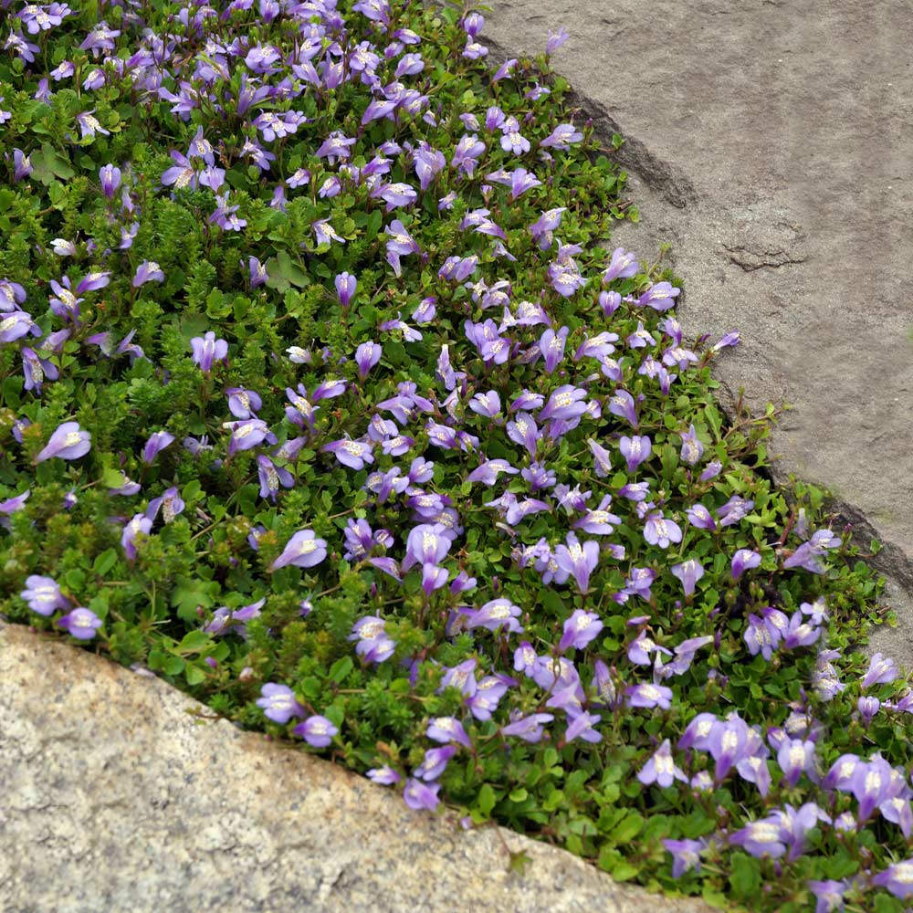
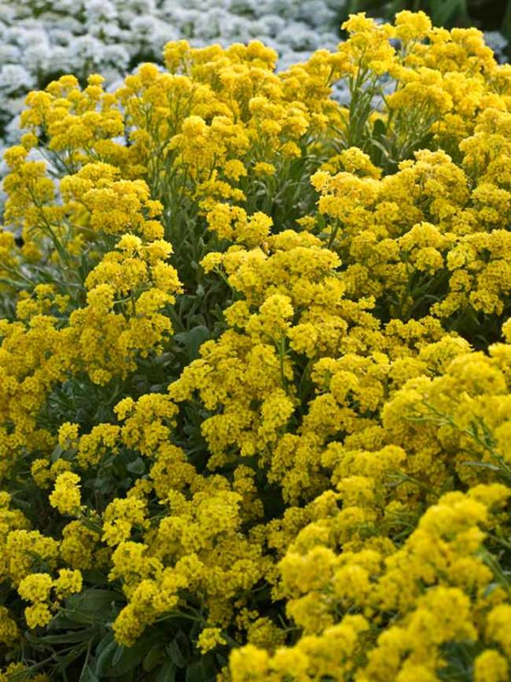

Posted on May 22, 2023
Perfect for Filling Paving Gaps and Replacing Lawn Areas: Explore the Ideal Walkable Plants
Grass is often considered the go-to ground cover plant for walking on, but even regular lawns can wear out if they endure too much foot traffic. You know those brown patches in your backyard where you frequently play, or those paths that form naturally as people take the shortest route through longer grass? They're clear signs that even traditional lawns have their limits.
However, if we expand our perspective beyond the conventional borders of lawns and driveways, we open ourselves up to a whole new world of design and planting possibilities through walkable ground covers. These versatile plants not only serve practical purposes like suppressing weeds and preventing soil erosion, but they also offer a diverse range of textures and seasonal interest right beneath our feet.
Walkable ground cover plants won't entirely replace pathways and lawn areas, but they're incredibly valuable when it comes to filling in gaps and covering areas where many other plants struggle to grow. Whether it's a dry and sunny spot or a shady and damp area, there are ground cover plants that are perfectly suited for walking on. And if the idea of walking on plants feels a bit unconventional, just shift your gardening perspective a little and indulge in the sensory delights of plants beneath your feet. It's a unique experience, and many of these plants have leaves that release their delightful scents as you walk on them.
7 Walkable Ground Cover Plants That Are Resilient And Pretty
1. Lithodora Diffusa

This amazing plant will spread out and add a pop of vibrant blue with its beautiful star-shaped summer flowers. And not only that, the dense dark green foliage has a bit of a rosemary-like appearance, adding even more visual interest to your space.
Here's the best part: lithodora is native to the Mediterranean, so it's well-equipped to handle dry and rocky soil conditions. It's a tough cookie that doesn't need a lot of water, making it perfect for xeriscaping projects as well. With lithodora, you get both stunning beauty and resilience in one package!
2. Mazus Reptans
This fast-growing ground cover plant thrives in shady areas and features bright green foliage and long-lasting lilac blue summer flowers. It remains evergreen in milder regions, making it a great choice for planting between paving stones. For a diverse mix of textures, consider combining it with mosses and soleirola.
3. Alyssum
For border edges and cracks between paving, consider the classic choice of white flowering sweet alyssum. However, for a hardier option, Nature Hills suggests the perennial yellow Alyssum, Aurinia saxatilis 'Golden Yellow'. This variety offers scented, brilliant golden yellow blossoms in spring. These plants are drought-tolerant, pollinator-friendly, and can handle light foot traffic. They're excellent workhorses that offer great value.
4. Creeping Jenny

This fast-growing ground cover plant features bright green foliage that remains in milder climates. It quickly spreads and works well in areas with light foot traffic. However, be cautious as it can be invasive, although the golden varieties like 'Aurea', 'Goldii', and 'Goldilocks' are less so. The golden green leaves add brightness to shady and damp areas, but note that insufficient sunlight may darken the leaves. In late spring, small yellow flowers enhance the golden effect, and these plants can tolerate various soil types.
5. Corsican Mint

This Mediterranean plant thrives in part-shade and prefers moist conditions. In these ideal settings, its small leaves will rapidly cover the ground, accompanied by purple flowers in summer. The mint-scented leaves add an extra touch of allure. With its ability to withstand light foot traffic, it's ideal for planting between paving stones. However, be cautious as it is a vigorous grower and can become dominant if it finds favorable conditions in your garden.
8. Ajuga Reptans

Bugleweed, with its dark bronze leaves, adds an appealing touch to borders and garden edging. It works wonders in softening hardscaping edges and can handle some foot and vehicle traffic in paths, patios, and driveways. Ajuga, the plant's botanical name, is tolerant of shade and dry soil. However, it thrives best in slightly damp part shade, where it can benefit from some sunlight during the day to enhance the richness of its foliage color.
7. Chamomile Nobile

Chamomile lawns have a romantic and literary appeal. Though they may not match the performance of a traditional grass lawn, spreading chamomile is perfect for smaller backyards, low-traffic areas, or as a fragrant spot to relax on. With its dense carpet of leaves and daisy flowers in summer, chamomile adds beauty to the landscape. When gently crushed, it releases its distinct honeyed scent. Chamomile thrives in well-drained soil with adequate moisture, and you can even harvest the flowers for making tea.